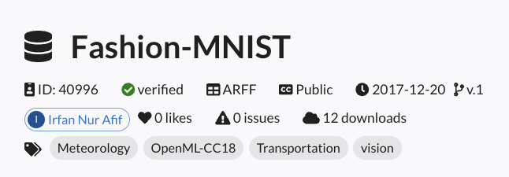
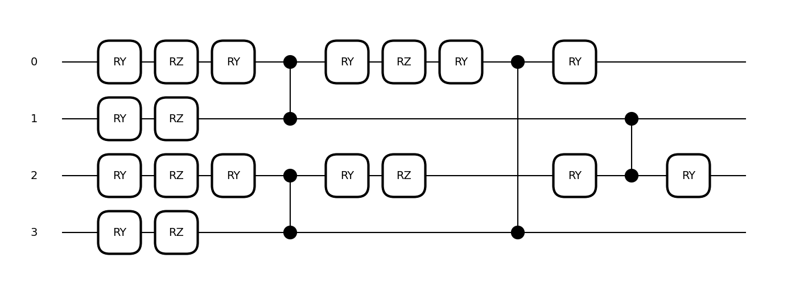
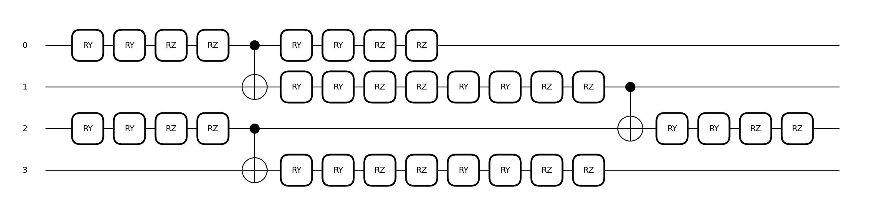

Tool Reference#
1. Experiment#
1.1 Loading Past Experiments#
The Experiment class allows loading past experiment logs to resume experiments from an intermediate point or to reproduce experiments conducted by others. While the next section will cover how to reproduce an experiment, this section introduces how to load past experiments.
Pattern 1: Loading Experiments You Conducted For experiments conducted in your local or cloud environment, you can load them by specifying the
experiment.jsonlog file generated by QXMT. If the directory structure, such as the working directory, differs between the original experiment and the current environment, it will automatically update to the current execution directory.
Once loaded, resuming the experiment using the run method will assign a consecutive run ID, allowing the experiment to be managed as part of a sequence.
import qxmt
experiment_path = "/your_project/experiments/your_experiment/experiment.json"
experiment = qxmt.Experiment().load(experiment_path)
Pattern 2: Loading Experiments Conducted by Others If the environment where the experiment was conducted is accessible, such as a shared server or cloud storage, you can load it in the same way as in Pattern 1. Ensure that the path to the configuration file is correctly set, and if custom modules are used, make sure they are included in the Python execution path.
If the experiment was conducted in a different environment and is not directly accessible, you need to copy the target experiment’s experiments/your_experiment folder (automatically generated and managed by QXMT) and any custom modules used into your local environment. After copying, the experiment can be loaded using the same procedure as before.
1.2 Experiment Reproduction#
This section explains how to reproduce a specific run_id of an experiment currently managed by an Experiment instance or one loaded using the load method, and how to retrieve artifacts such as models generated by the reproduction process.
To reproduce a specific run_id, execute the reproduce method on an Experiment instance that has accumulated runs, as shown below. The reproduction process will execute the target experiment, and the success of the reproduction is determined by whether the final model accuracy matches the value recorded in the log.
For reproducing experiments conducted by others, ensure that the paths of custom modules specified in the configuration file are correct and that the Python execution path is appropriately set, especially when directory structures differ.
reproduced_artifact, reproduced_result = experiment.reproduce(run_id=1, check_commit_id=True)
Configurable Parameters
run_id: The
run_idof the experiment to be reproduced.check_commit_id: Set to
Trueto verify the Git commit ID during reproduction.
If reproduction succeeds, two values are returned: reproduced_artifact and reproduced_result. These objects store datasets and models, similar to the execution of the run method. These can be retrieved or visualized as needed.
2. Dataset#
2.1 Load Datasets with OpenML#
In QXMT, the OpenML API can be utilized via a config file to simplify dataset preparation. This section explains the process from searching for the desired dataset to setting it up in the config file for use.
Let’s assume you want to use the “Fashion-MNIST” dataset for an experiment. First, search for the relevant dataset on OpenML’s dataset search page and navigate to its detail page. On the detail page, you will be able to see information about the dataset, as shown below. From this information, take note of the “ID” and add it to the config (in this case, the ID is “40996”).
Based on the information from the search, configure the Run settings in the config as shown below. (Only the necessary parts are extracted for clarity)
dataset:
type: "openml"
openml:
name: "Fashion-MNIST"
id: 40996
return_format: "numpy"
save_path: "data/openml/Fashion-MNIST/dataset.npz"
type: Specifies the dataset type to be used in QXMT. Set this to
openmlwhen using a dataset from OpenML.openml.name: The name of the dataset on OpenML.
openml.id: The ID of the dataset on OpenML.
openml.return_format: Specifies the format of the dataset. It can be either pandas or numpy.
openml.save_path: Specifies the path to save the downloaded dataset. If set to
null, the dataset will not be saved.
Both openml.name and openml.id can be used individually. If only openml.name is specified, the dataset will be searched internally via the API. Since openml.id uniquely identifies the dataset, it is recommended to use this value. If both openml.name and openml.id are set, the value of openml.id will take precedence.
2.3 Chain Processing of Raw Processing Logic and Transform Logic#
Not limited to the default logic provided by QXMT, users can also apply custom Raw Processing Logic and Transform Logic defined by themselves in a chain processing manner, where multiple processes are sequentially applied. In the configuration, the definition is done by listing each logic in order as a sequence.
In the example below, a process is defined that first applies normalization to the dataset, followed by dimensionality reduction using dimension_reduction_by_pca. There are several ways to represent lists in YAML, but as long as the syntax is permitted by YAML, any method can be used.
transform_logic:
- module_name: qxmt.datasets.transform.normalizer
implement_name: normalization
params: null
- module_name: qxmt.datasets.transform.reducer
implement_name: dimension_reduction_by_pca
params:
n_components: 2
3. Device#
3.1 Specifying the Simulator#
In QXMT, simulators provided by various platforms can be specified and utilized through the configuration settings.
Several tutorials use default.qubit, the most basic simulator provided by PennyLane.
If computation time becomes a bottleneck in your experiments, consider using faster simulators such as lightning.qubit, which is implemented in C++, or qulacs.simulator, known for its high performance.
Below is an example of configuration settings for using lightning.qubit:
device:
platform: "pennylane"
device_name: "lightning.qubit"
n_qubits: 2
shots: null
When using these additional simulators, you may need to install the corresponding plugins in your environment.
For example, to use lightning.qubit, you can install the plugin with the following command:
pip install pennylane-lightning.
For other simulators available in PennyLane, refer to the official documentation.
Note: QXMT has been validated and tested with frequently used simulators such as default.qubit, lightning.qubit, and qulacs.simulator. Therefore, some features of QXMT may not work with certain simulators. If you have requests for additional simulators, please feel free
3.2 Specifying the Simulation Execution Mode#
There are two types of simulation execution modes: State Vector and Sampling.
In the State Vector mode, gates are applied as matrix operations on the state vector. Since the results are deterministic and directly obtained from the operations, this mode is ideal for ensuring reproducibility and performing functionality checks.
In the Sampling mode, sampling is performed based on the probability amplitudes obtained from the matrix operations to determine the final measurement results. While noise and other factors are not considered, this mode allows for simulation behavior closer to that of real quantum hardware.
In QXMT, the execution mode can be specified by configuring the shots value in the device’s configuration.
The shots parameter represents the number of measurements, and as the value increases, the results converge toward those of the State Vector mode.
# State Vector Mode
device:
platform: "pennylane"
device_name: "default.qubit"
n_qubits: 2
shots: null
# Sampling Mode
device:
platform: "pennylane"
device_name: "default.qubit"
n_qubits: 2
shots: 1024
3.3 Specifying the Real Quantum Computers#
Quantum computers can be accessed through Amazon Braket and IBM Quantum. Note that both physical quantum computers and remote simulators require payment based on usage. Be sure to review the pricing details provided by each service provider in advance.
3.3.1 Using Amazon Braket#
Amazon Braket allows access to quantum computers and simulators provided by various vendors. The configuration file setup is consistent regardless of whether a quantum computer or simulator is used. Since accessing Amazon Braket requires integration with AWS, complete the account setup and configure the following three environment variables beforehand:
AWS_ACCESS_KEY_ID="xxx"
AWS_SECRET_ACCESS_KEY="xxx"
AWS_DEFAULT_REGION="xxx"
Once the environment variables are configured, the quantum computing tasks can be executed in the same manner as when using the local simulator, simply by updating the configuration settings. In the configuration file, set the device_name to "braket.aws.qubit", and specify the desired backend in the backend_name field.
The following backends can be specified in the configuration:
Provider |
Device |
Type |
Config Setting Name |
|---|---|---|---|
AWS |
SV1 |
Simulator |
sv1 |
AWS |
DM1 |
Simulator |
dm1 |
AWS |
TN1 |
Simulator |
tn1 |
IonQ |
default (Aria-1) |
QPU |
ionq |
IonQ |
Aria-1 |
QPU |
ionq_aria1 |
IonQ |
Aria-2 |
QPU |
ionq_aria2 |
IonQ |
Forte-1 |
QPU |
ionq_forte1 |
IQM |
default (Garnet) |
QPU |
iqm |
IQM |
Garnet |
QPU |
iqm_garnet |
QuEra |
default (Aquila) |
QPU |
quera |
QuEra |
Aquila |
QPU |
quera_aquila |
Rigetti |
default (Ankaa-2) |
QPU |
rigetti |
Rigetti |
Ankaa-2 |
QPU |
rigetti_ankaa2 |
Available backends may vary depending on the region and time of access. For detailed information, please refer to the official Amazon Braket documentation.
device:
platform: "pennylane"
device_name: "braket.aws.qubit"
backend_name: "iqm"
n_qubits: 2
shots: 1024
※ For the complete structure of the configuration, refer to this template.
3.3.2 Using IBM Quantum#
For IBMQ, execution is similarly possible by setting the API key issued after account creation as the environment variable "IBMQ_API_KEY".
In the configuration file, set device_name to "qiskit.remote" and specify the desired backend in the backend_name field. If backend_name is set to null, the backend with the shortest wait time will be automatically selected based on the number of pending jobs.
device:
platform: "pennylane"
device_name: "qiskit.remote"
backend_name: null
n_qubits: 2
shots: 128
※ For the complete structure of the configuration, refer to this template
4. Feature Map#
4.1 Visualization of Feature Map#
This section introduces how to visualize the quantum circuit of the feature map you created. First, access the instance of the feature map you wish to visualize. There are two main ways to access the instance:
The first method involves obtaining the feature map instance through an artifact returned as the result of executing run.
artifact, result = experiment.run(config_source=adhoc_config)
feature_map = artifact.model.kernel.feature_map
The second method is to directly create an instance of the target feature map. This approach is useful when you want to experiment while referencing the circuit diagram, such as when creating a custom feature map.
from qxmt.feature_maps.pennylane.rotation import RotationFeatureMap
feature_map = RotationFeatureMap(2, 2, ["X", "Y"])
Once the feature map instance is obtained, you can visualize its quantum circuit using the draw method. PennyLane currently provides two visualization formats for quantum circuits: default and mpl. This section introduces the visualization results for both formats using the same circuit.
feature_map.draw(x_dim=2, format="default")
0: ─╭AngleEmbedding(M0)─╭AngleEmbedding(M0)─╭AngleEmbedding(M0)─╭AngleEmbedding(M0)─┤
1: ─╰AngleEmbedding(M0)─╰AngleEmbedding(M0)─╰AngleEmbedding(M0)─╰AngleEmbedding(M0)─┤
M0 =
[0.41553733 0.03790852]
feature_map.draw(x_dim=2, format="mpl")
When visualizing a feature map, it is necessary to provide sample information for the input data by specifying either the x or x_dim argument.
The x argument should be set to a single sample value from the input data (e.g.,
x_train[0]).Alternatively, if using
x_dim, specify the dimensionality of the input data. In this case, random data corresponding to the specified dimensionality will be generated and used for visualizing the quantum circuit.
These values are used solely as sample data during quantum circuit visualization and do not affect the results of experiments such as model construction.
4.2 Using NPQC#
Here, we introduce the configuration settings for using NPQC as proposed in Reference [1].
NPQC is defined using the following quantum circuit, which repeatedly encodes input data into qubits. This approach allows handling data with an input dimensionality exceeding the number of qubits used.
Settings related to the feature map are managed collectively under the feature_map section in the configuration. Here, you can specify the type of feature map and its parameters. To use NPQCFeatureMap, configure as follows. Note that the device settings are omitted in the example below, but keep in mind that the number of qubits in the quantum circuit must be even when using NPQC.
feature_map:
module_name: "qxmt.feature_maps.pennylane"
implement_name: "NPQCFeatureMap"
params:
c: 1.0
reps: 2
module_name: The name of the module where the feature map is implemented (specified as above since it uses the implementation provided by QXMT).
implement_name: The name of the class that implements the feature map (specified as above since it uses the implementation provided by QXMT).
params.c: The scale parameter used in the feature map.
params.reps: The number of repetitions in the feature map.
4.3 Using YZCX#
Here, we introduce the configuration settings for using YZCX as proposed in Reference [1].
YZCX is defined using the following quantum circuit, and like NPQC, it can handle data with an input dimensionality exceeding the number of qubits used.
To use YZCXFeatureMap, configure as follows:
feature_map:
module_name: "qxmt.feature_maps.pennylane"
implement_name: "YZCXFeatureMap"
params:
c: 1.0
reps: 2
seed: 42
module_name: The name of the module where the feature map is implemented (specified as above since it uses the implementation provided by QXMT).
implement_name: The name of the class that implements the feature map (specified as above since it uses the implementation provided by QXMT).
params.c: The scale parameter used in the feature map.
params.reps: The number of repetitions in the feature map.
params.seed: The seed for the random numbers applied to rotation angles.
5. Kernel#
5.1 Using Projected Kernel#
In kernel-based machine learning models, such as QSVC, there are various algorithms available for kernel computation. This section explains how to configure the settings when using the Projected Kernel ([2]).
A simple Projected Kernel is expressed by the following equation, where the scale parameter γ and the method of projecting quantum states into classical states can be specified for distance computation.
Source: Equation (9) from “Power of data in quantum machine learning” [2]
The kernel-related settings are managed collectively under the kernel section in the config file. Here, you can specify the type of kernel to use and its parameters. To use the Projected Kernel, configure the settings in the config file as follows.
kernel:
module_name: "qxmt.kernels.pennylane"
implement_name: "ProjectedKernel"
params:
gamma: 1.0
projection: "z"
module_name: Specifies the name of the module where the kernel method is implemented. In this case, use the one provided by QXMT as indicated above.
implement_name: Specifies the class name that implements the kernel method. In this case, use the one provided by QXMT as indicated above.
params.gamma: The scale parameter for kernel computation.
params.projection: The method for projecting quantum states into classical states (available options are “x”, “y” and “z”).
6. Model#
6.1 Model Evaluation via Cross Validation#
If you want to evaluate the performance of the implemented quantum machine learning model using Cross Validation, you can configure and run it as follows. No additional settings are required in the config file for performing Cross Validation. The results of the execution are returned as a list that contains the evaluation results of each split.
# Obtain the model and dataset instances from the artifact returned by experiment.run
model = artifact.model
dataset = artifact.dataset
# In the example below, we perform evaluation by splitting the dataset originally prepared as "Train" into 5 folds
model.cross_val_score(X=dataset.X_train, y=dataset.y_train, cv=5)
>> [0.444643 0.535290 0.423356 0.551298 0.673212]
X: Explanatory variables of the dataset to be split
y: Objective variables of the dataset to be split
cv: Number of splits for the dataset
QXMT’s Cross Validation internally executes scikit-learn’s cross_val_score. Therefore, you can also configure the other parameters described in the scikit-learn documentation. One commonly used parameter is scoring, which allows you to set the evaluation metric. By default, the model-specific default metric defined by scikit-learn is used (for SVC, this is accuracy). If you want to use a custom metric, refer to the String name scorers.
6.2 Hyperparameter Search for Machine Learning Models#
This section introduces how to perform hyperparameter search for machine learning models. No additional settings are required in the config file. The results of the search are returned as a dictionary containing the values of the discovered parameters. Additionally, by setting the refit parameter to True during the search, you can obtain the trained model using the pa
from sklearn.metrics import accuracy_score
# Obtain the model and dataset instances from the artifact returned by experiment.run
model = artifact.model
dataset = artifact.dataset
# Configure the search space and conditions
search_space = {
'C': [0.1, 1.0],
'gamma': [0.01, 0.1]
}
search_args = {
'cv': 5,
"direction": "maximize",
'n_jobs': -1,
'verbose': 2,
"n_trials": 5,
}
# Perform the hyperparameter search
best_params = model.hyperparameter_search(
X=dataset.X_train,
y=dataset.y_train,
sampler_type="tpe",
search_space=search_space,
search_args=search_args,
objective=None,
refit=True
)
# Evaluate the search results
pred = model.predict(dataset.X_test)
answer = dataset.y_test
score = accuracy_score(pred, answer)
print(f"Best Parameters: {best_params}")
print(f"Accuracy: {score}")
X: Explanatory variables of the dataset
y: Objective variables of the dataset
sampler_type: Algorithm used for the search
grid: Grid Samplerrandom: Random Samplertpe: TPE Sampler by Optuna
search_space: Parameters and their search ranges
search_args: Settings for the search
objective: Objective function used during the search (if None, the default metric defined in the model is used. For details: String name scorers)
refit: Whether to train the model with the parameters found during the search (True/False)
6.3 Optimizer Settings#
When using VQE, you can specify the optimizer for optimization calculations through the configuration. Currently, we support optimizers provided by PennyLane and SciPy. The optimizer can be specified in the configuration using optimizer_settings.name. If the name value starts with scipy., the SciPy optimizer will be used; otherwise, the PennyLane optimizer will be used.
For available optimizers in SciPy, please refer to this page. To use a SciPy optimizer, add scipy. to the beginning of the name specified by method= in the linked page, and specify it in optimizer_settings.name of the configuration as follows:
model:
name: "basic"
diff_method: "adjoint"
optimizer_settings:
name: "scipy.BFGS"
params: null
params:
max_steps: 500
tol: 1e-6
verbose: true
For using PennyLane optimizers, please refer to the table below to find the appropriate one.
Optimizer |
Configuration Name |
|---|---|
|
|
|
|
|
|
|
|
|
|
|
|
|
|
|
|
|
|
|
|
|
|
|
|
|
|
|
|
|
The settings in the configuration file as follows:
optimizer_settings:
name: "Adam"
params:
stepsize: 0.01
beta1: 0.9
beta2: 0.999
For detailed information about each optimizer’s parameters and behavior, please refer to the PennyLane documentation.
Reference#
[1] Tobias Haug, Chris N. Self, M. S. Kim, “Quantum machine learning of large datasets using randomized measurements”, Arxiv (2021)
[2] Hsin-Yuan Huang, Michael Broughton, Masoud Mohseni, Ryan Babbush, Sergio Boixo, Hartmut Neven, and Jarrod R McClean, “Power of data in quantum machine learning”, Nature Communications 12, 1–9 (2021).
Version Information
Environment |
Version |
|---|---|
document |
2025/05/23 |
QXMT |
v0.5.2 |